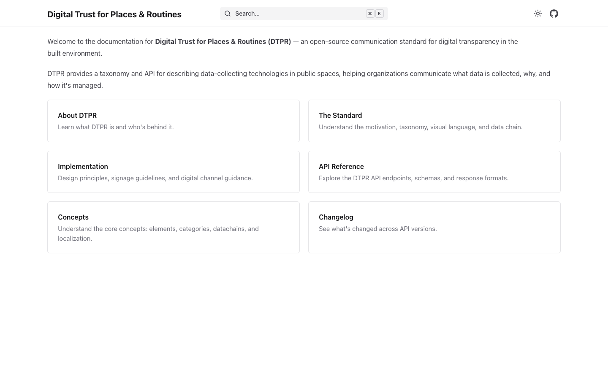
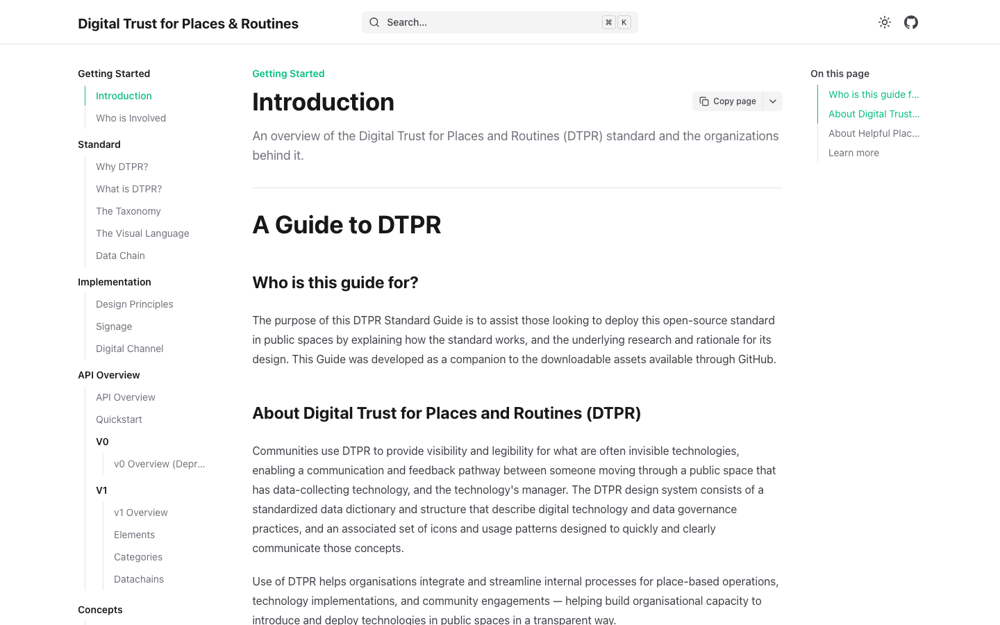
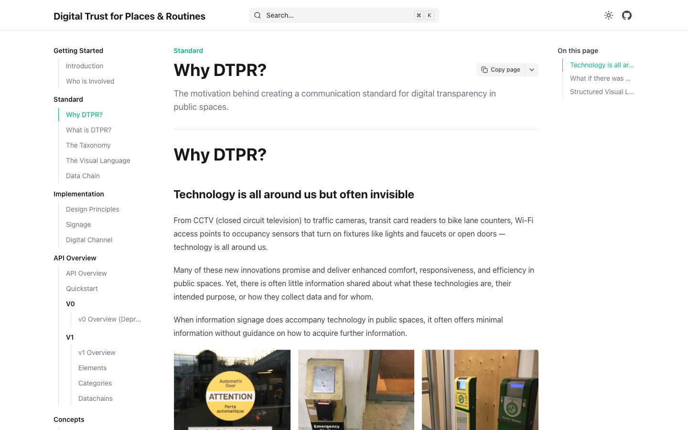
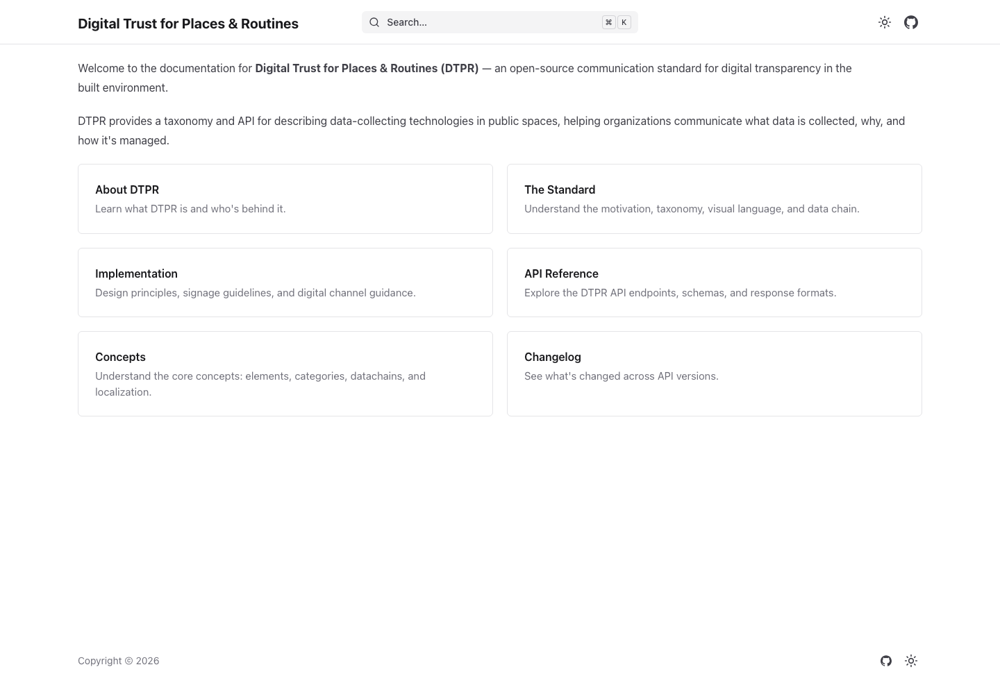
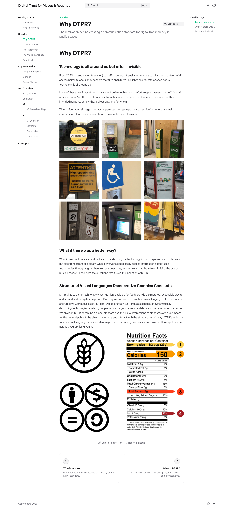

The documentation site
Mintlify-built. Light mode by default — white background, dark text, teal link accents (the same #0f5153 identifiability color from the Bootstrap palette). The developer audience's entry point. The hex mark appears in the top-left header; the rest of the page is a conventional Mintlify layout.
Self-audit correction (v0.2 → v0.2.1): The previous version of this audit incorrectly described docs.dtpr.io as a "dark mode" surface based on the Mintlify platform default assumption. The actual live site is light mode. The hex mark, the sidebar, the typography, and the link accent color are all on a white background. This page has been rewritten to reflect the actual site.
Home / landing

Introduction — the standard explainer

#0f5153 identifiability color. Link accents throughout the body are the same teal.
Why DTPR? — the value proposition page

Full-page captures


Audit findings specific to docs.dtpr.io
Light mode is the default — not dark mode
The site is on a white background. The dark-mode toggle in the corner suggests a dark variant exists, but the default is light. Earlier versions of this audit incorrectly described the site as dark mode based on the Mintlify platform default assumption.
docs.dtpr.io (live)
The teal link accent is the identifiability color
#0f5153 is the link accent throughout docs.dtpr.io. The active sidebar item is in the same teal. This is the same color that functions as the identifiability semantic on vision.dtpr.io. Mintlify's platform default is not teal — this is a deliberate DTPR choice.
docs.dtpr.io body · vision.dtpr.io Bootstrap
The hex mark survives in light mode
The dark version of the hex mark appears in the top-left header, recolored for the white background. The mark holds its shape; the inner circle and square remain visible.
docs.dtpr.io top header
Three-column layout is conventional Mintlify
Left sidebar, main content, right rail. This is the Mintlify default and is not a DTPR-specific design choice. Useful for the developer audience, not a brand-defining surface.
docs.dtpr.io
The "nutrition label" value proposition is fully developed here
The Why DTPR? page is the most complete value-proposition document in the ecosystem. The seven-questions framework is presented in full. This is the source the foundation memo's essence should cite.
docs.dtpr.io/standard/why-dtpr
No cross-navigation to the other surfaces
No link back to dtpr.io, no link to vision.dtpr.io, no link to the showcase. A developer landing here from a search result has no path to the rest of the ecosystem. Phase 1 audit finding (Q1.5).
Consolidation plan Q1.5 · Heuristics synthesis H1
What this means for the brand book
docs.dtpr.io is in-family with the other three light-mode sites.
The original assumption that docs.dtpr.io was a dark-mode outlier is wrong. All four surfaces are light-mode, all four use the same teal/navy palette, all four use the same hex mark. The brand book has to acknowledge this as a single visual system, not two.
What does vary:
- Type system: Red Hat Text (dtpr.io) · Source Sans + JetBrains Mono (Makeshift) · system stack (vision.dtpr.io) · Mintlify default (docs.dtpr.io)
- Layout mechanic: stacked cards (dtpr.io) · horizontal scrollytelling (vision.dtpr.io) · token-color sections (Makeshift) · sidebar docs (docs.dtpr.io)
- Illustration style: Corporate Memphis (dtpr.io) · hex-based scenarios (vision.dtpr.io) · layered hex mark (Makeshift) · none (docs.dtpr.io)
OPEN: dark mode variant exists or doesn't? The toggle in the top-right corner of docs.dtpr.io suggests a dark mode is available. Whether the toggle works, what the dark variant looks like, and whether the brand book has to specify it is OPEN. The current live site defaults to light; the dark variant is unobserved in this audit.